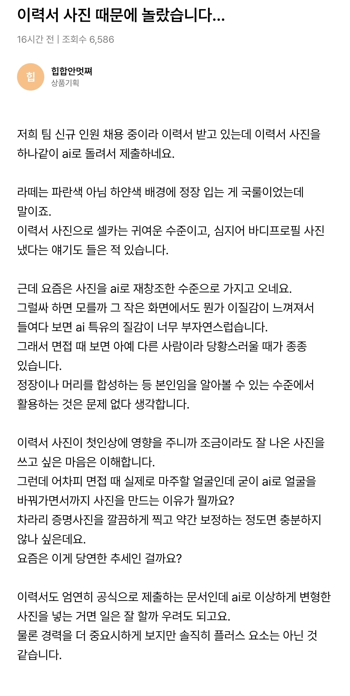

이력서 사진 때문에 놀랐다는 채용담당자
댓글
..?ㅋㅋㅋ
블라우스 입고 찍은거였는데 정장으로 바꾸고 이쁘게 꾸며줬음
본인과 다른건 전부 불합격 시켜야 하는데 사기치는거잖아
여권 사진도 저렇게 들고 온다는 썰을 본 거 같은데...
난 이거 이해는 됨
외모가 서탈에 분명히 영향을 미침
AI로 빡보정해서 다른 사람 수준으로 미남 미녀가 되면 면접기회를 얻을 가능성이 상승함
그리고 면접 때 면접관들이 실물과 사진의 다름을 보고 놀란건 면접자 본인이 해결할 숙제지
내가 구직자 입장이라도 서탈이 예상되는 상향지원이면 일단 AI 빡보정 사진으로 들이밀어볼거 같음
셀카나 바프는 개념이 아니라 아예 걍 아무 생각이 없는 애들이거나 실업급여 루팡일거고
이력서에 사진부터 구라치는데 면접볼 확률이 늘어나는게 과연 합격에 도움이 될까
오히려 사진 완전 구라면 더 떨어트림
Ai 티나면 안되지..
허세사진
얼짱각도
고양이 귀 수염
뽀샤시
페이스 오프 급 보정
이력서사진 왠만한거 다겪어봤는데
면접보면 정상인은 없음
울회사도 살찌기전 사진 들고옴
살찐 모습은 원래의 + 40키로
요새애들 개념이 좀 없음
뽀샤시랑 고양이귀수염은 ㅅㅂ ㅋㅋ
변기에 앉아서 폰 보다가 찍힌 것 같은 어두운 사진도 있고 ㅋㅋ
나중에라도 허위서류제출로 해고사유만들기 좋지 않나?
그건 직원을 외모로뽑는다는걸 스스로 증명하는거라 ㅋㅋ
일단 얼굴재창조라도 좋으니 다듬어진 사진 넣어라.
실물과 다른건 그냥 별거 아니다. 얼굴이 달라도 그저 깔끔하고 단정한 옷차림이면 된다.
ㄹㅇ 바프사진 첨부하는 애들 있더라
얼마나 좆소면 그런놈들이 지원을 하노
저런 이력서들 본적이 없는데 도대체 얼마나 개ㅈ소인거야
제출하면 다행이지 없는게 태반임
예전에도 포토샵으로 거의 재창조 수준으로 수정해서 냈는데 그걸 전문으로 하는 이력서 사진 전문 스튜디오까지 있었음.
난 사진관에서 찍은거 그대로 회사에 제출했는데 디자인팀에서 제안서 작성할 때 마음에 안든다고 내 사진을 수정했드라...